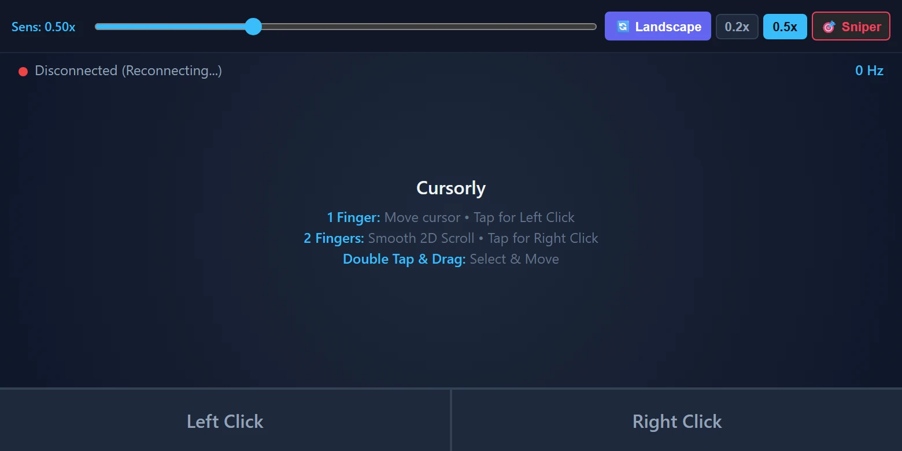

Cursorly – Ultra-Precise Mobile Mouse Control
An open-source, end-to-end mobile-to-PC touchpad and mouse control system built with a Python + FastAPI + Win32 SendInput host engine and a Kotlin + Jetpack Compose Android client.
Problem addressed: Mobile remote-mouse tools often suffer from capacitive touch jitter, lost sub-pixel motion during integer OS cursor ticks, and fragile single-transport setups.
Android Client
Communication Layer
PC Host
Desktop Input
- Signal pipeline: 1€ adaptive jitter filter, dynamic velocity ballistics, and fractional
SubpixelAccumulatordriving native Win32SendInput - Multi-transport: WebSocket (
TCP_NODELAY) over Wi-Fi/USB tethering, Bluetooth RFCOMM, standalone Bluetooth HID Mouse, zero-install browser trackpad, and direct ADB Linux kernel streaming - Disambiguated gestures:
200 ms/8 dptap-drag state machine, 2-finger scroll/pinch, 3-finger desktop switching, and UDP/mDNS host auto-discovery
Python
FastAPI
Win32 SendInput
Kotlin
Jetpack Compose
WebSockets
ADB
CURSORLY // PREVIEW
Move cursor here to preview One Euro smoothing
TRANSPORT
WebSocket
DELTA
+0.42, -0.18 px
FILTER
One Euro
